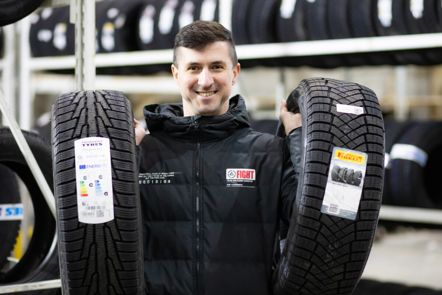

<section class="news-blog top-offset bottom-offset">
  <div class="container">
    <div class="breadcrums">
      <div class="breadcrumbs__wrapper">
        <a href="/" class="breadcrumbs__link--second">
          НОВОСТИ
        </a>
        <a href="/" class="breadcrumbs__link--second">
          АВИА
        </a>
        <a class="breadcrumbs__link--second">
          Крупногабаритные автомобильные перевозки из Китая
        </a>
      </div>
    </div>
    <h4 class="news-blog__subtitle">
      ОАО «Галопередол»
    </h4>
    <h3 class="title news-blog__title">
      Крупногабаритные автомобильные перевозки из Китая
    </h3>
    <div class="news-blog__wrapper">
      <div class="news-blog__text">
        <p class="news-blog__descr descr">
          Белорусы уже начали активно &laquo;переобувать&raquo; свои автомобили в&nbsp;зимние шины, а&nbsp;до&nbsp;пика сезона остаётся ещё месяц. Наверняка&nbsp;те, кому пора покупать новый комплект, задумываются о&nbsp;том, как выбирать зимние шины, на&nbsp;что обращать внимание, к&nbsp;каким брендам присмотреться. Ранее av.by рассказывал об&nbsp;этом в&nbsp;<span><a href="/">видеовыпуске</a></span>. А&nbsp;сегодня мы&nbsp;решили изучить пристальнее такие параметры шин, как протектор и&nbsp;типоразмеры (они влияют на&nbsp;безопасность поездок и&nbsp;путешествий в&nbsp;зимний период).
        </p>
        <p class="news-blog__descr descr">
          Для этого мы&nbsp;отправляемся на&nbsp;склад онлайн-гипермаркета 21vek.by, где на&nbsp;данный момент хранится порядка 50&nbsp;000&nbsp;шин! И&nbsp;на&nbsp;примере нескольких из&nbsp;них изучим вопросы с&nbsp;приглашённым экспертом в&nbsp;области контраварийной подготовки Данилой Алтуфьевым.
        </p>
      </div>
      <div class="news-blog__image">
        
      </div>
      <div class="news-blog__test">
        <ol>
          <li>элемент нумерованного списка</li>
          <li>элемент нумерованного списка</li>
        </ol>
        <ul>
          <li>элемент нумерованного списка</li>
          <li>элемент нумерованного списка</li>
        </ul>
        <h1>
          Практический опыт показывает, что повышение уровня гражданского сознания требует определения...
        </h1>
        <h2>
          Практический опыт показывает, что повышение уровня гражданского сознания требует определения...
        </h2>
        <h3>
          Практический опыт показывает, что повышение уровня гражданского сознания требует определения...
        </h3>
        <h4>
          Практический опыт показывает, что повышение уровня гражданского сознания требует определения...
        </h4>
        <h5>
          Практический опыт показывает, что повышение уровня гражданского сознания требует определения...
        </h5>
        <h6>
          Практический опыт показывает, что повышение уровня гражданского сознания требует определения...
        </h6>
        <strong>Практический опыт показывает, что повышение уровня гражданского сознания требует определения...</strong>
      </div>
    </div>


  </div>
</section>
